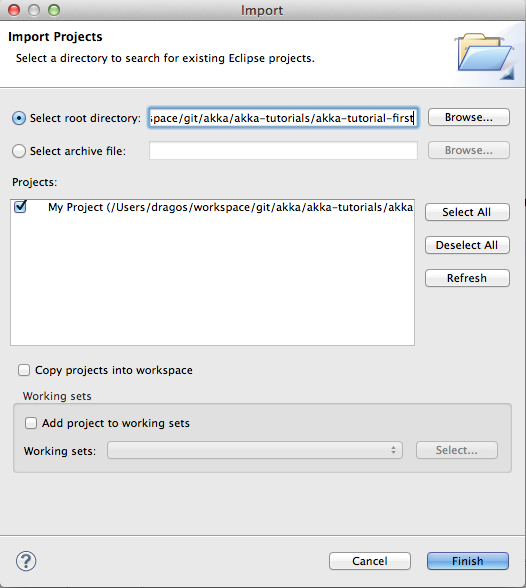

Getting Started With Akka (Scala)¶
Introduction¶
Welcome to the first tutorial on how to get started with Akka and Scala. We assume that you already know what Akka and Scala are and will now focus on the steps necessary to start your first project.
There are two variations of this first tutorial:
- creating a standalone project and run it from the command line
- creating a sbt (simple build tool) project and running it from within sbt
Since they are so similar we will present them both.
The sample application that we will create is using actors to calculate the value of Pi. Calculating Pi is a CPU intensive operation and we will utilize Akka Actors to write a concurrent solution that scales out to multi-core processors. This sample will be extended in future tutorials to use Akka Remote Actors to scale out on multiple machines in a cluster.
We will be using an algorithm that is called “embarrassingly parallel” which just means that each job is completely isolated and not coupled with any other job. Since this algorithm is so parallelizable it suits the actor model very well.
Here is the formula for the algorithm we will use:

In this particular algorithm the master splits the series into chunks which are sent out to each worker actor to be processed. When each worker has processed its chunk it sends a result back to the master which aggregates the total result.
Create the project¶
The simplest way to get started is to install the Typesafe akka-scala-sbt project template. This will install a basic Akka project that we can use as a start.
Before we can do that we need to install giter8 (g8) and simple build tool (sbt). In case you have not done that yet you can find the instructions in the Typesafe Stack installation guide: Installing the Typesafe Stack.
Let’s create the Akka starter project from the giter8 template:
g8 typesafehub/akka-scala-sbt
Akka 2.0 Project Using Scala and sbt
organization [org.example]: akka.tutorial
package [org.example]: akka.tutorial.first.scala
name [Akka Project In Scala]:
akka_version [2.0]:
version [0.1-SNAPSHOT]:
Applied typesafehub/akka-scala-sbt.g8 in akka-project-in-scala
Now we have a simple Akka sbt project to start hacking in:
cd akka-project-in-scala
ls
README project src
Tutorial source code¶
If you want don’t want to type in the code and/or set up an sbt project from scratch then you can check out the full tutorial from the Typesafe giter8 template repository:
g8 typesafehub/akka-first-tutorial-scala
Setting up The Scala IDE for Eclipse (optional)¶
If you want to use Eclipse for developing Scala code, you need to install the Scala IDE for Eclipse. Follow the instructions in the Getting Started guide. If you haven’t used Eclipse before, make sure you watch the Features Overview screencast on the Scala IDE homepage homepage
You can start right away and create a New Scala Project and add akka-actor-2.0.jar. as on your Java Build Path, but if you are already using sbt, you can use the sbteclipse plugin to generate an Eclipse project from the sbt project definition. To install a new sbt plugin add it to your project by pasing the following line in project/sbteclipse.sbt.:
addSbtPlugin("com.typesafe.sbteclipse" % "sbteclipse-plugin" % "2.0.0")
Note
Make sure that sbteclipse.sbt is inside your project/ subdirectory, and not in your base directory (or in build.sbt)
Now you can generate the project definition by typing eclipse in the sbt console:
> eclipse
[info] About to create Eclipse project files for your project(s).
[info] Updating {file:/Users/dragos/workspace/git/akka/akka-tutorials/akka-tutorial-first/}default-c10195...
[info] Resolving org.scala-lang#scala-library;2.9.1 ...
[info] Resolving com.typesafe.akka#akka-actor;2.0 ...
[info] Done updating.
[info] Successfully created Eclipse project files for project(s): My Project
Next you need to import this project in Eclipse, by choosing Eclipse/Import.. Existing Projects into Workspace. Navigate to the directory where you defined your SBT project and choose import:
Now we have the basis for an Akka Eclipse application, so we can..
Start writing the code¶
Now it’s about time to start hacking.
We start by creating a Pi.scala file and adding these import statements at the top of the file:
import akka.actor._
import akka.routing.RoundRobinRouter
import akka.util.Duration
import akka.util.duration._
If you are using SBT in this tutorial then create the file in the src/main/scala directory.
If you are using the command line tools then create the file wherever you want. I will create it in a directory called tutorial at the root of the Akka distribution, e.g. in $AKKA_HOME/tutorial/Pi.scala.
Note
You can find Akka’s documentation online here.
Creating the messages¶
The design we are aiming for is to have one Master actor initiating the computation, creating a set of Worker actors. Then it splits up the work into discrete chunks, and sends these chunks to the different workers in a round-robin fashion. The master waits until all the workers have completed their work and sent back results for aggregation. When computation is completed the master sends the result to the Listener, which prints out the result.
With this in mind, let’s now create the messages that we want to have flowing in the system. We need four different messages:
- Calculate – sent to the Master actor to start the calculation
- Work – sent from the Master actor to the Worker actors containing the work assignment
- Result – sent from the Worker actors to the Master actor containing the result from the worker’s calculation
- PiApproximation – sent from the Master actor to the Listener actor containing the the final pi result and how long time the calculation took
Messages sent to actors should always be immutable to avoid sharing mutable state. In scala we have ‘case classes’ which make excellent messages. So let’s start by creating three messages as case classes. We also create a common base trait for our messages (that we define as being sealed in order to prevent creating messages outside our control):
sealed trait PiMessage
case object Calculate extends PiMessage
case class Work(start: Int, nrOfElements: Int) extends PiMessage
case class Result(value: Double) extends PiMessage
case class PiApproximation(pi: Double, duration: Duration)
Creating the worker¶
Now we can create the worker actor. This is done by mixing in the Actor trait and defining the receive method. The receive method defines our message handler. We expect it to be able to handle the Work message so we need to add a handler for this message:
class Worker extends Actor {
// calculatePiFor ...
def receive = {
case Work(start, nrOfElements) ⇒
sender ! Result(calculatePiFor(start, nrOfElements)) // perform the work
}
}
As you can see we have now created an Actor with a receive method as a handler for the Work message. In this handler we invoke the calculatePiFor(..) method, wrap the result in a Result message and send it back asynchronously to the original sender using the sender reference. In Akka the sender reference is implicitly passed along with the message so that the receiver can always reply or store away the sender reference for future use.
The only thing missing in our Worker actor is the implementation on the calculatePiFor(..) method. While there are many ways we can implement this algorithm in Scala, in this introductory tutorial we have chosen an imperative style using a for comprehension and an accumulator:
def calculatePiFor(start: Int, nrOfElements: Int): Double = {
var acc = 0.0
for (i ← start until (start + nrOfElements))
acc += 4.0 * (1 - (i % 2) * 2) / (2 * i + 1)
acc
}
Creating the master¶
The master actor is a little bit more involved. In its constructor we create a round-robin router to make it easier to spread out the work evenly between the workers. Let’s do that first:
val workerRouter = context.actorOf(
Props[Worker].withRouter(RoundRobinRouter(nrOfWorkers)), name = "workerRouter")
Now we have a router that is representing all our workers in a single abstraction. So now let’s create the master actor. We pass it three integer variables:
- nrOfWorkers – defining how many workers we should start up
- nrOfMessages – defining how many number chunks to send out to the workers
- nrOfElements – defining how big the number chunks sent to each worker should be
Here is the master actor:
class Master(nrOfWorkers: Int,
nrOfMessages: Int,
nrOfElements: Int,
listener: ActorRef) extends Actor {
var pi: Double = _
var nrOfResults: Int = _
val start: Long = System.currentTimeMillis
val workerRouter = context.actorOf(
Props[Worker].withRouter(RoundRobinRouter(nrOfWorkers)), name = "workerRouter")
def receive = {
// handle messages ...
}
}
A couple of things are worth explaining further.
Note that we are passing in a ActorRef to the Master actor. This is used to report the the final result to the outside world.
But we are not done yet. We are missing the message handler for the Master actor. This message handler needs to be able to react to two different messages:
- Calculate – which should start the calculation
- Result – which should aggregate the different results
The Calculate handler is sending out work to all the Worker via its router.
The Result handler gets the value from the Result message and aggregates it to our pi member variable. We also keep track of how many results we have received back, and if that matches the number of tasks sent out, the Master actor considers itself done and sends the final result to the listener. When done it also invokes the context.stop(self) method to stop itself and all its supervised actors. In this case it has one supervised actor, the router, and this in turn has nrOfWorkers supervised actors. All of them will be stopped automatically as the invocation of any supervisor’s stop method will propagate down to all its supervised ‘children’.
Let’s capture this in code:
def receive = {
case Calculate ⇒
for (i ← 0 until nrOfMessages)
workerRouter ! Work(i * nrOfElements, nrOfElements)
case Result(value) ⇒
pi += value
nrOfResults += 1
if (nrOfResults == nrOfMessages) {
// Send the result to the listener
listener ! PiApproximation(pi, duration = (System.currentTimeMillis - start).millis)
// Stops this actor and all its supervised children
context.stop(self)
}
}
Creating the result listener¶
The listener is straightforward. When it receives the PiApproximation from the Master it prints the result and shuts down the ActorSystem.
class Listener extends Actor {
def receive = {
case PiApproximation(pi, duration) ⇒
println("\n\tPi approximation: \t\t%s\n\tCalculation time: \t%s"
.format(pi, duration))
context.system.shutdown()
}
}
Bootstrap the calculation¶
Now the only thing that is left to implement is the runner that should bootstrap and run the calculation for us. We do that by creating an object that we call Pi, here we can extend the App trait in Scala, which means that we will be able to run this as an application directly from the command line.
The Pi object is a perfect container module for our actors and messages, so let’s put them all there. We also create a method calculate in which we start up the Master actor and wait for it to finish:
object Pi extends App {
calculate(nrOfWorkers = 4, nrOfElements = 10000, nrOfMessages = 10000)
// actors and messages ...
def calculate(nrOfWorkers: Int, nrOfElements: Int, nrOfMessages: Int) {
// Create an Akka system
val system = ActorSystem("PiSystem")
// create the result listener, which will print the result and
// shutdown the system
val listener = system.actorOf(Props[Listener], name = "listener")
// create the master
val master = system.actorOf(Props(new Master(
nrOfWorkers, nrOfMessages, nrOfElements, listener)),
name = "master")
// start the calculation
master ! Calculate
}
}
As you can see the calculate method above it creates an ActorSystem and this is the Akka container which will contain all actors created in that “context”. An example of how to create actors in the container is the ‘system.actorOf(...)’ line in the calculate method. In this case we create two top level actors. If you instead where in an actor context, i.e. inside an actor creating other actors, you should use context.actorOf(...). This is illustrated in the Master code above.
That’s it. Now we are done.
But before we package it up and run it, let’s take a look at the full code now, with package declaration, imports and all:
/**
* Copyright (C) 2009-2012 Typesafe Inc. <http://www.typesafe.com>
*/
package akka.tutorial.first.scala
import akka.actor._
import akka.routing.RoundRobinRouter
import akka.util.Duration
import akka.util.duration._
object Pi extends App {
calculate(nrOfWorkers = 4, nrOfElements = 10000, nrOfMessages = 10000)
sealed trait PiMessage
case object Calculate extends PiMessage
case class Work(start: Int, nrOfElements: Int) extends PiMessage
case class Result(value: Double) extends PiMessage
case class PiApproximation(pi: Double, duration: Duration)
class Worker extends Actor {
def calculatePiFor(start: Int, nrOfElements: Int): Double = {
var acc = 0.0
for (i ← start until (start + nrOfElements))
acc += 4.0 * (1 - (i % 2) * 2) / (2 * i + 1)
acc
}
def receive = {
case Work(start, nrOfElements) ⇒
sender ! Result(calculatePiFor(start, nrOfElements)) // perform the work
}
}
class Master(nrOfWorkers: Int,
nrOfMessages: Int,
nrOfElements: Int,
listener: ActorRef) extends Actor {
var pi: Double = _
var nrOfResults: Int = _
val start: Long = System.currentTimeMillis
val workerRouter = context.actorOf(
Props[Worker].withRouter(RoundRobinRouter(nrOfWorkers)), name = "workerRouter")
def receive = {
case Calculate ⇒
for (i ← 0 until nrOfMessages)
workerRouter ! Work(i * nrOfElements, nrOfElements)
case Result(value) ⇒
pi += value
nrOfResults += 1
if (nrOfResults == nrOfMessages) {
// Send the result to the listener
listener ! PiApproximation(pi, duration = (System.currentTimeMillis - start).millis)
// Stops this actor and all its supervised children
context.stop(self)
}
}
}
class Listener extends Actor {
def receive = {
case PiApproximation(pi, duration) ⇒
println("\n\tPi approximation: \t\t%s\n\tCalculation time: \t%s"
.format(pi, duration))
context.system.shutdown()
}
}
def calculate(nrOfWorkers: Int, nrOfElements: Int, nrOfMessages: Int) {
// Create an Akka system
val system = ActorSystem("PiSystem")
// create the result listener, which will print the result and
// shutdown the system
val listener = system.actorOf(Props[Listener], name = "listener")
// create the master
val master = system.actorOf(Props(new Master(
nrOfWorkers, nrOfMessages, nrOfElements, listener)),
name = "master")
// start the calculation
master ! Calculate
}
}
Run it as a command line application¶
Go ahead and type (or copy) the code for the tutorial as in:
$AKKA_HOME/akka-tutorials/akka-tutorial-first/src/main/scala/akka/tutorial/first/scala/Pi.scala
When that’s done open up a shell and step in to the Akka distribution (cd $AKKA_HOME).
First we need to compile the source file. That is done with Scala’s compiler scalac. Our application depends on the akka-actor-2.0.jar JAR file, so let’s add that to the compiler classpath when we compile the source.
On Linux/Unix/Mac systems:
$ scalac -cp lib/akka/akka-actor-2.0.jar Pi.scala
On Windows systems:
C:\Users\jboner\src\akka\akka-project-in-scala> scalac -cp lib\akka\akka-actor-2.0.jar Pi.scala
When we have compiled the source file we are ready to run the application. This is done with java but yet again we need to add the akka-actor-2.0.jar JAR file to the classpath, and this time we also need to add the Scala runtime library scala-library.jar and the classes we compiled ourselves.
On Linux/Unix/Mac systems:
$ java \
-cp lib/scala-library.jar:lib/akka/akka-actor-2.0.jar:. \
akka.tutorial.first.scala.Pi
Pi approximation: 3.1415926435897883
Calculation time: 359 millis
On Windows systems:
C:\Users\jboner\src\akka\akka-project-in-scala> java \
-cp lib/scala-library.jar;lib\akka\akka-actor-2.0.jar;. \
akka.tutorial.first.scala.Pi
Pi approximation: 3.1415926435897883
Calculation time: 359 millis
Yippee! It is working.
Run it inside SBT¶
If you used SBT, then you can run the application directly inside SBT. First you need to compile the project.
On Linux/Unix/Mac systems:
$ sbt
> compile
...
On Windows systems:
C:\Users\jboner\src\akka\akka-project-in-scala> sbt
> compile
...
When this in done we can run our application directly inside SBT:
> run
...
Pi approximation: 3.1415926435897883
Calculation time: 359 millis
Yippee! It is working.
Run it from Eclipse¶
Eclipse builds your project on every save when Project/Build Automatically is set. If not, bring you project up to date by clicking Project/Build Project. If there are no compilation errors, you can right-click in the editor where Pi is defined, and choose Run as.. /Scala application. If everything works fine, you should see.
Pi estimate: 3.1415926435897883
Calculation time: 359 millis
You can also define a new Run configuration, by going to Run/Run Configurations. Create a new Scala application and choose the tutorial project and the main class to be Pi. You can pass additional command line arguments to the JVM on the Arguments page.
Once you finished your run configuration, click Run. You should see the same output in the Console window. You can use the same configuration for debugging the application, by choosing Run/Debug History or just Debug As.
Overriding Configuration Externally (Optional)¶
The sample project includes an application.conf file in the resources directory:
akka.actor.deployment {
/master/workerRouter {
# Uncomment the following two lines to change the calculation to
# use 10 workers instead of 4:
#router = round-robin
#nr-of-instances = 10
}
}
If you uncomment the two lines, you should see a change in performance, hopefully for the better (you might want to increase the number of messages in the code to prolong the time the application runs). It should be noted that overriding only works if a router type is given, so just uncommenting nr-of-instances does not work; see the routing section in the Akka docs for more information.
Note
Make sure that your application.conf is on the class path when you run the application. If running from inside SBT that should already be the case, otherwise you need to add the directory containing this file to the JVM’s -classpath option.
Conclusion¶
We have learned how to create our first Akka project using Akka’s actors to speed up a computation-intensive problem by scaling out on multi-core processors (also known as scaling up). We have also learned to compile and run an Akka project using either the tools on the command line or the SBT build system.
If you have a multi-core machine then I encourage you to try out different number of workers (number of working actors) by tweaking the nrOfWorkers variable to for example; 2, 4, 6, 8 etc. to see performance improvement by scaling up.
Happy hakking.